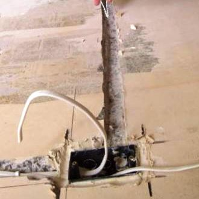
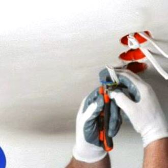
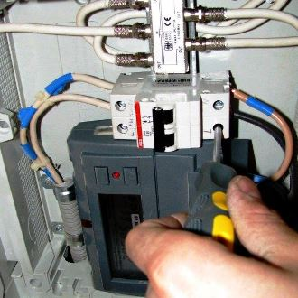
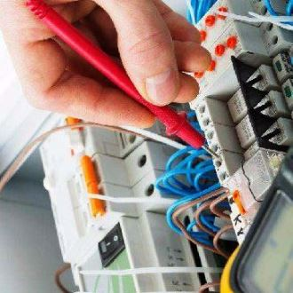

Качественный электромонтаж в Санкт-Петербурге и ленобласти, стаж 12 лет. Частный электрик, недорого и качественно.
Тел. 8 904 642 08 57 Николай.

Установка розеток на кухне.
Какими должны быть современные розетки для кухни?
Сколько конкретно необходимо сделать точек, для того чтобы было максимально удобно воспользоваться ими в самой непредвиденной ситуации?
Конечно, же, как может об этих тонкостях данного строительного производства знать обычный человек, который никогда в жизни не сталкивался с такой, проблемной ситуацией.
Если относится к инновационным розеткам на кухне, то, сразу, же, следует отметить тот факт, что они непременно должны быть долговечными, безопасными и практичными.
Сколько стоит установка розеток на кухне? Цены в рублях.
Установить розетки на кухне, штука - |
300 |
Монтаж посудомоечной машины на кухне. |
2000 |
Установка стиральной машины на кухне. |
2 500 |
Электромонтаж кухни под ключ. |
8 000 |
|  |  |
Как обычно, полагается, розетки должны быть выполнены на высококачественном уровне, так как, именно они подвластны интенсивности регулярного использования. Только в этой комнате в доме находится максимально бытовых приборов: кухонный комбайн, блендер, миксер, посудомоечная и стиральные машины, вытяжка, холодильник, микроволновая печи.
Вот, видите, и это еще не все основополагающие приборы, которыми пользуется истинная хозяйка.
Высококвалифицированная бригада, которая трудится в СПБ и ее области, предлагает произвести установку розеток на кухне в кратчайшие сроки и с минимальными затратами.
Не стоит забывать о том, что благодаря достойному опыту работы на рынке электротехнических услуг, розетки на кухне установят аккуратно, практически не разрушая покрытие и стены. Ведь, сейчас существует целая масса немало важных инструментов и другого профессионального оборудования для чистого внедрения дополнительных точек, розеток, выключателей.
|  |  |
В чем отличается основная преимущественная особенность работы мобильной частной бригады мастеров и крупной строительной компании города Москвы?
Почему монтаж розеток на кухне доверяют нам.
В первую очередь, вы являетесь, прямой поставщик для непревзойденных услуг, поэтому стоимость монтажа дополнительных розеток на кухне сводится к минимуму. То есть, каждый примерно представляет себе, что этот вид услуги не должен быть дорогостоящим.
Во - вторую очередь, мы выполняем заказы в кратчайшие сроки, пользуемся востребованной популярностью в городе и московской области.
В третью очередь, индивидуальный подход к каждому клиенту, достоверная консультация по возникшим вопросам - вызывает у клиентов доверие и дополнительное сотрудничество с друзьями, родственниками.
Сомневаетесь в том, к кому обратиться?
Выход один - это позвонить по указанным контактам разнообразных строительных организаций, и сравнить ценовую категорию.
Мы не станем доказывать вам, что являемся лидером на рынке всех видов электромонтажных работ, в том числе и установки розеток на кухне. Просто-напросто, с нами вы столкнетесь с приемлемыми и выгодными ценами на монтаж розеток на кухне и другие типы электромонтажных работ. Гарантия и ответственность - это девиз бригады мастеров!

Сколько будут стоить материалы.
Расценки на электропроводку.
Электромонтаж в доме.
Замена электропроводки в двухкомнатной квартире?.
Сколько стоит сделать внутреннюю проводку?.
Установка люстр и светильников.
Электромонтаж проводов в бане.